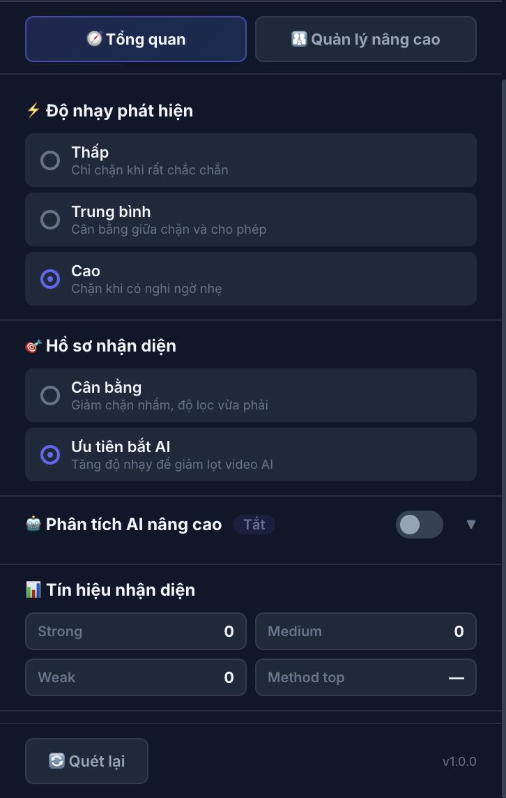
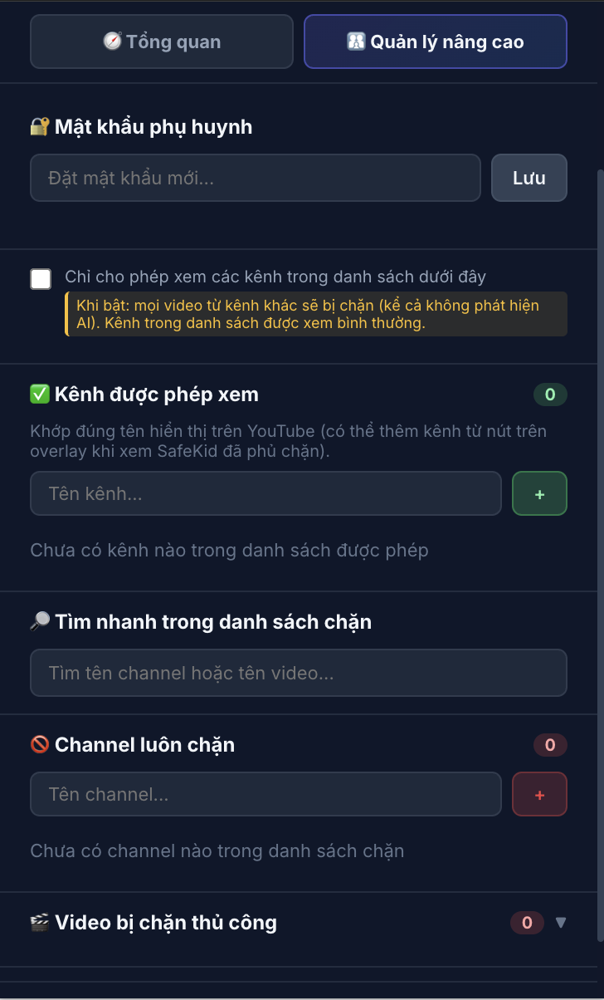

Toàn bộ hướng dẫn cách cài đặt, cấu hình và sử dụng SafeKid. Extension hỗ trợ chặn kênh hoặc video không phù hợp với trẻ em do phụ huynh tự thiết lập hoặc cơ chế tự động phát hiện.
Tải file safekid-extension.zip từ trang chủ và giải nén ra một thư mục.
Trên trình duyệt Chrome, gõ chrome://extensions/ vào thanh địa chỉ rồi nhấn Enter.
Bật công tắc "Developer mode" (Chế độ nhà phát triển) ở góc trên bên phải.
Nhấn nút "Load unpacked" (Tải tiện ích đã giải nén) → chọn thư mục vừa giải nén.
Đây là màn hình chính khi bạn nhấn vào biểu tượng SafeKid. Tại đây bạn có thể điều chỉnh các cài đặt phát hiện và kiểm soát quá trình hoạt động.

Màn hình Tab Tổng quan
Bật để SafeKid tự động quét và chặn nội dung độc hại trên YouTube & YouTube Kids. Tắt nếu muốn tạm dừng toàn bộ tính năng bảo vệ.
Hiển thị 3 con số quan trọng về hoạt động của extension:
Chỉ chặn khi rất chắc chắn video là độc hại hoặc AI. Ít gây phiền hà (chặn nhầm) nhưng có thể vô tình lọt nội dung xấu.
Cân bằng giữa chặn và cho phép. Phù hợp cho đa số người dùng trưởng thành.
Chặn ngay cả khi có những nghi ngờ nhỏ. An toàn nhất cho trẻ em, mặc dù có thể chặn nhầm một số video bình thường.
Giảm tỷ lệ chặn nhầm, chỉ lọc các nội dung rõ ràng vi phạm. Phù hợp khi bạn muốn trải nghiệm YouTube ít bị gián đoạn.
Tăng cường độ nhạy với các dấu hiệu nội dung tạo tự động (AI slop). An toàn hơn cho trẻ nhỏ khỏi rác nội dung.
SafeKid có thể kết nối với các mô hình AI lớn (như Gemini) để phân tích ngữ cảnh video một cách vô cùng chính xác. Đây là tính năng tùy chọn — SafeKid vẫn tự động bảo vệ rất tốt bằng bộ lọc thông minh tích hợp sẵn.
Tab dành riêng cho phụ huynh quản lý danh sách kênh an toàn, kênh bị cấm, đặt mật khẩu bảo vệ và các cấu hình chuyên sâu.

Màn hình Tab Quản lý nâng cao
Khóa các cài đặt quan trọng bằng mật khẩu (tối thiểu 4 ký tự) để ngăn trẻ em vô tình tắt lớp bảo vệ. Khi thiết lập:
Thêm tên các kênh YouTube mà bạn hoàn toàn tin tưởng (ví dụ: VTV, HTV3, kênh hoạt hình chính thức). Video từ các kênh này sẽ không bao giờ bị SafeKid chặn, bất kể chúng có đặc điểm giống AI hay không.
Khi công tắc này được bật, SafeKid chuyển sang mức độ kiểm soát cao nhất:
Ghi danh các kênh mà bạn muốn loại bỏ vĩnh viễn. Toàn bộ video từ các kênh trong danh sách này sẽ bị SafeKid che khuất lập tức, dù nội dung thực sự của video đó là gì.
Những video độc hại/AI sẽ tự động bị phủ một lớp mờ dày đặc trên ảnh thu nhỏ (thumbnail) kèm theo các thông tin:
Nhấn vào khu vực video đã bị chặn sẽ không có tác dụng — điều này bảo vệ trẻ em không thể "cố ý" bấm vào xem.
Nếu bằng một cách nào đó (như qua link chia sẻ) trẻ vẫn truy cập thẳng vào trang chiếu video bị chặn, hệ thống sẽ:
Giải đáp nhanh các thắc mắc trong quá trình sử dụng SafeKid.
Hoàn toàn Không. SafeKid là tiện ích chạy độc lập trên trình duyệt của bạn (local). Không có dữ liệu xem video hay thông tin cá nhân nào được gửi về máy chủ của chúng tôi. Nếu bạn dùng API AI bổ sung, dữ liệu chỉ gửi trực tiếp qua API của Google/OpenRouter.
Có. Hệ thống được thiết kế tối ưu hóa để tương thích với cả youtube.com và trang web youtubekids.com.
Khi mật khẩu phụ huynh đã bật, trẻ sẽ không thể mở cài đặt SafeKid. Tuy nhiên đối với các bé lớn và am hiểu máy tính, trẻ có thể vô hiệu hóa tiện ích thông qua trang Quản lý tiện ích (chrome://extensions) của Google Chrome.
Đó là trường hợp "chặn nhầm" (false positive). Để khắc phục: Nhấn chuột phải -> "Cho phép channel này", video sẽ sáng lại lập tức. Hoặc bạn có thể cân nhắc chuyển Độ nhạy phát hiện về mức "Trung bình" trong Tab Tổng quan.